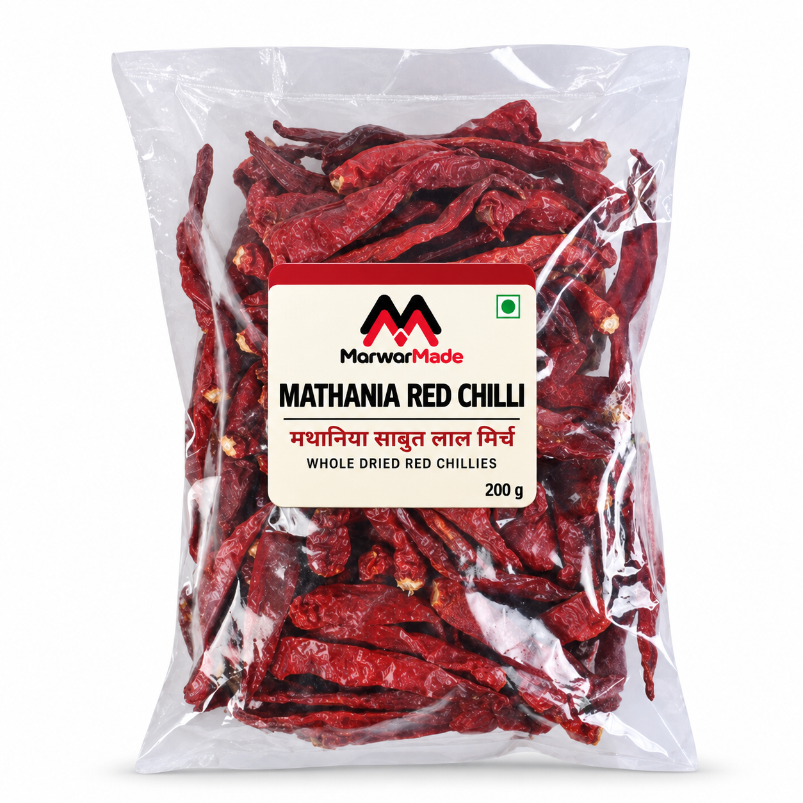

Whole, so you decide
Keep the chilli whole for tempering, soften it before making a paste, or grind it when a recipe calls for fresh chilli powder. One form gives you several ways to cook.

Rajasthan special • whole dried chilli • 200 g
A 200 g pack of whole dried red chillies for cooks who want control over the final flavour: use them whole in a tadka, soften them for a chilli paste, or grind a small batch at home.
The current pack artwork confirms the product name, whole form and 200 g quantity. Final MRP, batch, best-before, sourcing declaration, FSSAI information, customer care and delivery terms will be published before ordering opens.
A chilli with a place
Mathania is in Jodhpur district, Rajasthan. The product name is widely used for whole chillies and chilli powder connected with the region. We will publish MarwarMade’s verified sourcing declaration before sales begin.
Keep the chilli whole for tempering, soften it before making a paste, or grind it when a recipe calls for fresh chilli powder. One form gives you several ways to cook.
Heat and colour can vary naturally between individual chillies and harvests. Begin with less than you think you need, taste the dish and adjust gradually.
Use it in tadka, gravies, chutney, chilli paste and Rajasthan-rooted dishes such as Laal Maas. Match the quantity to your recipe and preferred heat.
Whole chilli cooking guide
The best format depends on the dish. Use a whole chilli for a quick aromatic tadka, a softened paste when you want it worked through a gravy, or a small freshly ground batch for flexible everyday cooking.
Whole dried chillies can darken quickly. Lower the heat if the chilli begins to scorch or smoke heavily.
Wear gloves if your skin is sensitive and avoid touching your eyes while handling chillies.
Keep the room ventilated while roasting or grinding dried chillies.
Seal the pouch well or move the chillies to a clean, airtight container. Store away from heat, direct sunlight and moisture. Always use dry hands or utensils, and discard the product if you notice moisture, mould or an unusual odour.
It is a pack of whole dried red chillies. The current pack size shown is 200 g.
Both spellings are commonly used in product searches. This page uses Mathania to match the name printed on the current MarwarMade pack.
Heat can vary between chillies and harvests. MarwarMade will not publish a fixed heat claim until the selling batch has been assessed, so start with less and adjust after tasting.
Mathania chilli is closely associated with Laal Maas in Rajasthani cooking. Follow your recipe for the number of chillies, soaking method and cooking time.
The product is not described as stemless. The pack photograph shows natural whole chillies, including some stems.
Ordering will open after the final MRP, product declaration, sourcing information, customer-care channel and delivery terms are published.